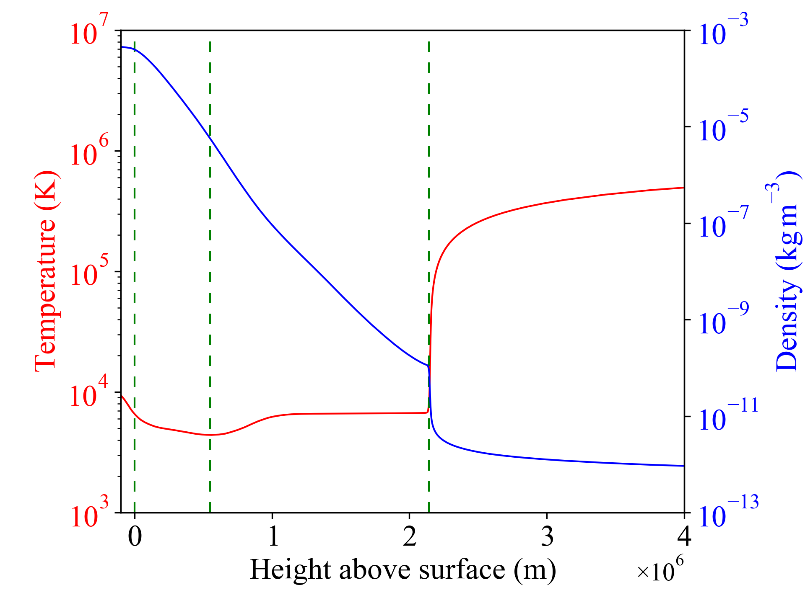
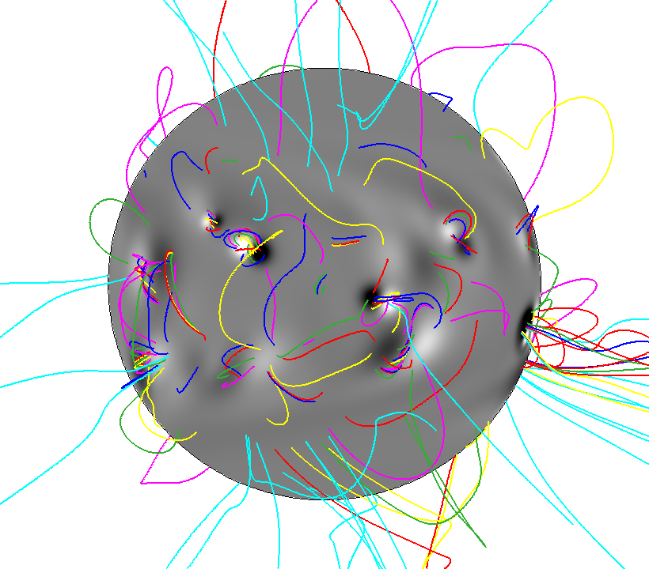
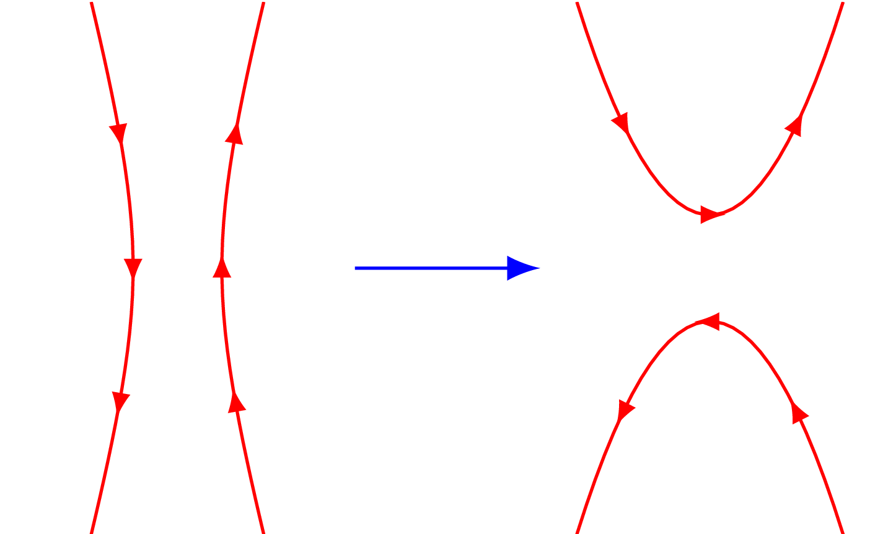
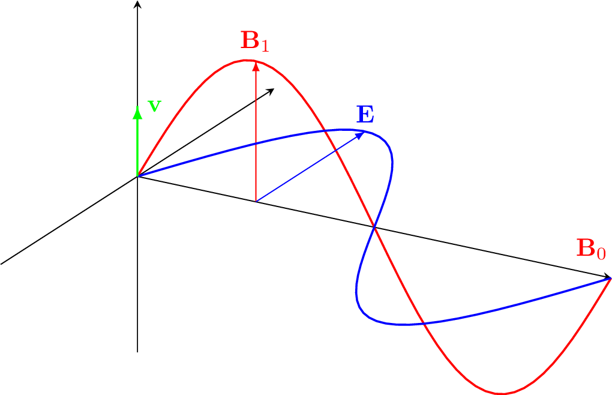

Research interests
Solar coronal heating

Global coronal magnetic field modelling

Magnetic reconnection

MHD waves

Colleagues
In the course of my research, it has been my pleasure to work with many colleagues.
External collaborators
In particular, among colleagues at other institutions, I am pleased to have collaborated with:
Co-authors
In addition to these, I am pleased to have co-written papers with:
- Edoardo Alaimo, University of Palermo
- Costanza Argiroffi, University of Palermo
- Marco Barbera, University of Palermo
- Will T. Barnes, NASA Goddard SFC
- Peter J. Cargill, Imperial College London
- Lars K. S. Daldorff, NASA Goddard SFC
- Fabio D'Anca, INAF Palermo Observatory
- Ineke De Moortel
- Bart De Pontieu, Lockheed Martin SAL
- Alan W. Hood
- Daniel Johnson
- James A. Klimchuk, NASA Goddard SFC
- James E. Leake, NASA Goddard SFC
- Ugo Lo Cicero, INAF Palermo Observatory
- Duncan H. Mackay
- Juan Martínez-Sykora, Lockheed Martin SAL
- Shanwlee Sow Mondal, NASA Goddard SFC
- Paolo Pagano, University of Palermo
- Jacob D. Parker, NASA Goddard SFC
- Clare E. Parnell
- Antonino Petralia, University of Palermo
- Fabio Reale, University of Palermo
- Luisa Sciortino, INAF Palermo Observatory
- Paola Testa, Harvard Centre for Astrophysics
- Michela Todaro, INAF Palermo Observatory